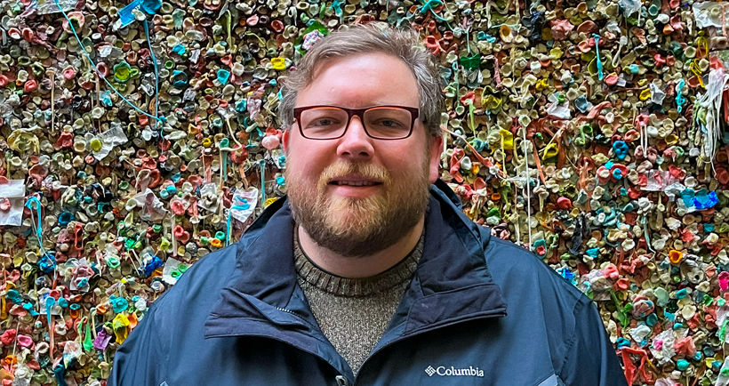

Below you'll find a digital resume outlining my career.
As you’ve likely arrived here from my resume or job application, I’d like to thank you for considering me for a position in your organization. I believe in the power of video to change lives, to educate, and to democratize information access across the globe. I built this site to provide a richer, more dynamic experience that reading a resume, but nothing beats the spoken word so please feel free to reach out to me to discuss what I can provide to you or your organization. A selection of videos and graphics I've produced is available upon request.
In over a decade of working in communications and media production I have acquired an extensive and varied set of skills and expertise. The following list provides a list of things I deem myself skilled in, but I am always learning and acquiring new skills.
I generally work within an Adobe Creative Cloud ecosystem, but am experince with Avid Media Composer and other post-production software.
Master of Science in Information Technology
Florida State University
Graduation: Summer 2023
GPA: 4.0
Bachelor of Science in Communication
Media Production Specialization
Florida State University
2009 - 2012
GPA: 3.7
Information Architecture
Graduate Certificate
Florida State University
Expected 2023
Information Leadership & Management
Graduate Certificate
Florida State University
Expected 2023
Licensed UAS Operator
Federal Aviation Administration
2021-2023
2018 Adobe Creativity in Goverment AwardsBest Videography
Florida State UniversityProgram Manager
Led the GEOSET Initiative at Florida State University and managed digital media at FSU Libraries. Oversaw a team of full-time, part-time, and student employees. Revisioned the GEOSET initiative to focus on campus-wide sponsored research support. Produced promotional videos for various FSU departments. Overhauled the GEOSET website and managed GEOSET studio space.
Kyle Cade ProductionsOwner
Freelance media production services specializing in animated and long-form informational videos for non-profit and governmental clients. Clients include John Hopkins University Insitute for Education Policy, the Excellence in Education Foundation, Florida Governor Ron DeSantis, and Florida House Speakers Chris Sprowls and Paul Renner.
Florida Dept. of Management ServicesMedia Production Specialist
Managed media production services for over 900 employees. Designed an in-house 4k media production studio for inter-agency use. Performed drone photography and videography for DMS owned property. Designed, wrote, and implemented a communications strategy for the Art in the Capitol Exhibit including a virtual 360° tour, digital brochure, email blasts, and press releases.
Florida House of RepresentativesMultimedia Producer
Provided media production services for the 120 members of the Florida House. Created award-winning, impactful videos as well as timely social media videos. Managed the Florida House media studio and a full-time production assistant. Oversaw equipment purchasing and maintenance. Took on general writing and communications duties as needed.
Excellence in Education FoundationDigital Content Manager
Managed video production and graphic design for Florida's foremost education policy non-profit organization. Streamlined production to ensure brand uniformity and decrease turnaround times. Created multiple animated videos to explain policy concepts to a lay audience. Designed and implemented recurring weekly social media graphics.
Peter Glenn Ski & SportsMedia Production Specialist
Reimagined the Peter Glenn video style to maximize organic reach, leading to over 8.6 million views today. Streamlined workflow to triple video production within a year. Managed a full-time assistant, freelance editors, and freelance photographers. Managed the Peter Glenn studio space, oversaw equipment purchasing, and organized seasonal photoshoots.
Florida Center for Research in STEMVideographer
Produced standards-based educational videos featuring scientists, teachers, experts and artists shot on location throughout the state of Florida for use by teachers and educators worldwide. Oversaw long-form filming for archival purposes. Worked within an agile four person team to improve production times and streamline post-production workflow.
© Kyle Cade Wilson. All rights reserved. Design: HTML5 UP.